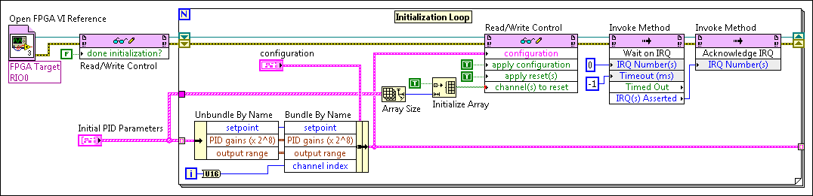
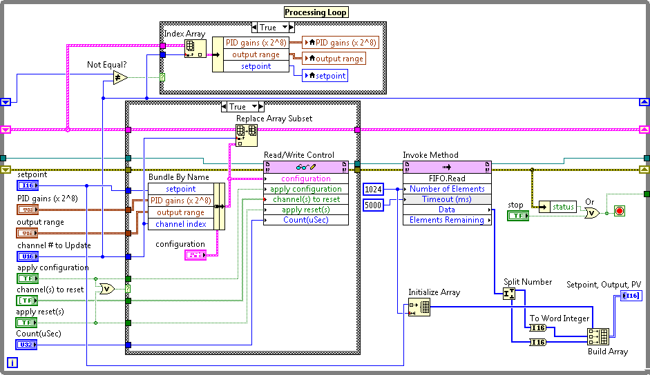

You can use the PID (FPGA) Express VI to implement single-channel or multi-channel PID on a LabVIEW FPGA target. The PID (FPGA) Express VI implements a fixed-point PID algorithm. Refer to the VI topic for details about the algorithm the VI uses.
|
Note��The PID (FPGA) Express VI is available only if you install the LabVIEW FPGA Module. |
To configure the PID (FPGA) Express VI for a single-channel implementation, enter 1 in the Number of channels control on the configuration dialog box. For single-channel PID implementations, any changes you make to the PID parameters on the host VI take effect immediately on the FPGA target.
(NI-RIO) If you have the NI-RIO software installed, refer to the Using Discrete PID - cRIO project in the labview\examples\CompactRIO\FPGA Fundamentals\FPGA Math and Analysis\PID Toolkit directory for an example of a single-channel PID implementation on an FPGA target.
 Open example�
Open example�
 Find related examples
Find related examples
(NI-RIO) If you have the NI-RIO software installed, you also can refer to the Using Discrete PID - R Series project in the labview\examples\R Series\FPGA Fundamentals\FPGA Math and Analysis\PID Toolkit directory for an example of a single-channel PID implementation on an FPGA target.
Open example�
Find related examples
To configure the PID (FPGA) Express VI for a multi-channel implementation, enter a number greater than 1 in the Number of channels control on the configuration dialog box. To handle the values for each channel, the host VI can include an initialization loop and processing loop, which you can use to modify parameters or reset channels.
The initial parameter values you enter on the configuration dialog box for the PID (FPGA) Express VI set the initial values for all channels. To specify unique values for individual channels, you must create an initialization loop on the host VI.
In the initialization loop, you might update the parameter values of some channels while other channels retain the initial values you specified in the configuration dialog box. In the following block diagram, the initialization loop initializes the parameters of all channels.
|
Note��The following block diagram contains some functions available only if you install FPGA target driver software or the LabVIEW FPGA Module. |

After initializing the PID parameters and while running the VI on the FPGA target, you might want to modify parameters or reset channels on a per-channel basis, without affecting the execution of other channels. Create a processing loop on the host VI to modify parameters or reset channels asynchronously during execution of the FPGA VI.
Resetting a PID channel resets the internal channel states to 0 and restarts the PID algorithm while using either the parameter values stored in memory or the parameter values from the host VI. To modify different parameters, you must specify the channel index, which tells the PID algorithm the channel number to which to apply the new parameter values. The following block diagram shows an example of a processing loop.
|
Note��The following block diagram contains some functions available only if you install FPGA target driver software or the LabVIEW FPGA Module. |
